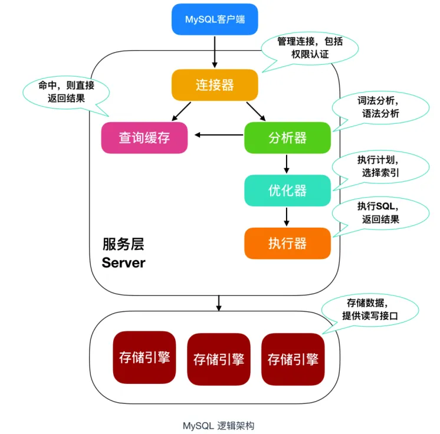
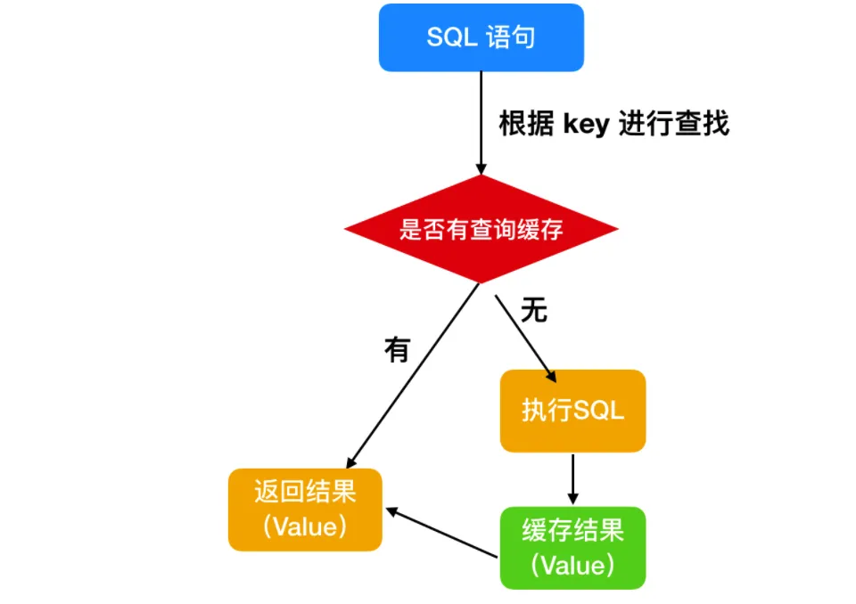

从MySQL 架构上来说，可以把 MySQL 拆解成几部分，如下图所示

大致上来说，MySQL 可以分为 Server层和 存储引擎层。
Server 层包括连接器、查询缓存、分析器、优化器、执行器，包括大多数 MySQL 中的核心功能，所有跨存储引擎的功能也在这一层实现，包括 存储过程、触发器、视图等。
存储引擎层包括 MySQL 常见的存储引擎，包括 MyISAM、InnoDB 和 Memory 等，最常用的是 InnoDB，也是现在 MySQL 的默认存储引擎。存储引擎也可以在创建表的时候手动指定，比如下面
CREATE TABLE `tv` (
`id` int(10) UNSIGNED NOT NULL AUTO_INCREMENT,
PRIMARY KEY (`id`)
) ENGINE = InnoDB CHARACTER SET = utf8mb4 COLLATE = utf8mb4_general_ci COMMENT = '测试表';首先需要在 MySQL 客户端登陆才能使用，所以需要一个连接器来连接用户和 MySQL 数据库，我们一般是使用
mysql -u 用户名 -p 密码来进行 MySQL 登陆，和服务端建立连接。在完成 TCP 握手 后，连接器会根据你输入的用户名和密码验证你的登录身份。如果用户名或者密码错误，MySQL 就会提示 Access denied for user，来结束执行。如果登录成功后，MySQL 会根据权限表中的记录来判定你的权限。
连接完成后，你就可以执行 SQL 语句了，这行逻辑就会来到第二步：查询缓存。
MySQL 在得到一个执行请求后，会首先去 查询缓存 中查找，是否执行过这条 SQL 语句，之前执行过的语句以及结果会以 key-value 对的形式，被直接放在内存中。key 是查询语句，value 是查询的结果。如果通过 key 能够查找到这条 SQL 语句，就直接返回 SQL 的执行结果。
如果语句不在查询缓存中，就会继续后面的执行阶段。执行完成后，执行结果就会被放入查询缓存中。可以看到，如果查询命中缓存，MySQL 不需要执行后面的复杂操作，就可以直接返回结果，效率会很高。

查询缓存不建议使用
因为只要在 MySQL 中对某一张表执行了更新操作，那么所有的查询缓存就会失效，对于更新频繁的数据库来说，查询缓存的命中率很低。
如果没有命中查询，就开始执行真正的 SQL 语句。
首先，MySQL 会根据你写的 SQL 语句进行解析，分析器会先做 词法分析，你写的 SQL 就是由多个字符串和空格组成的一条 SQL 语句，MySQL 需要识别出里面的字符串是什么，代表什么。预处理也是在这。
然后进行 语法分析，根据词法分析的结果， 语法分析器会根据语法规则，判断你输入的这个 SQL 语句是否满足 MySQL 语法。如果 SQL 语句不正确，就会提示 You have an error in your SQL syntax
经过分析器的词法分析和语法分析后，你这条 SQL 就合法了，MySQL 就知道你要做什么了。但是在执行前，还需要进行优化器的处理，优化器会判断你使用了哪种索引，使用了何种连接，优化器的作用就是确定效率最高的执行方案。
MySQL 通过分析器知道了你的 SQL 语句是否合法，你想要做什么操作，通过优化器知道了该怎么做效率最高，然后就进入了执行阶段，开始执行这条 SQL 语句
在执行阶段，MySQL 首先会判断你有没有执行这条语句的权限，没有权限的话，就会返回没有权限的错误。如果有权限，就打开表继续执行。打开表的时候，执行器就会根据表的引擎定义，去使用这个引擎提供的接口。对于有索引的表，执行的逻辑也差不多。
至此，MySQL 对于一条语句的执行过程也就完成了。
负责执行sql语句后数据的储存和提取